19 سؤال
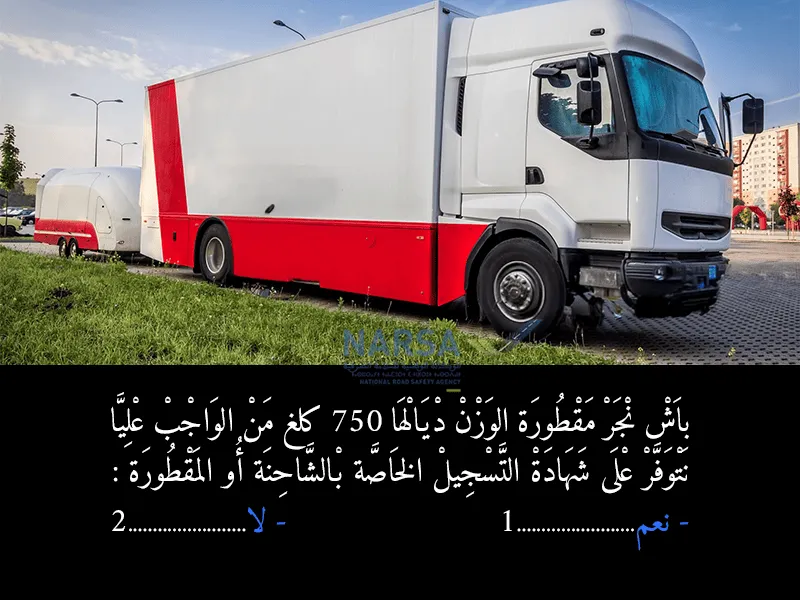
الجواب الصحيح: 2
الجواب الصحيح هو: 2. لاحيت المقطورة لي الوزن ديالها ما كيفوتش 750 كيلوغرام، ما خاصهاش شهادة تسجيل بوحدها. شهادة تسجيل الكاميو كافية.
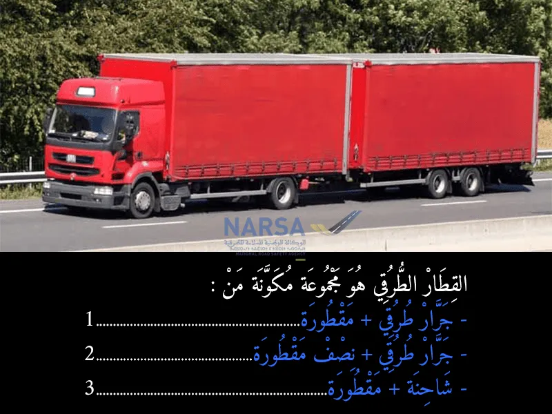
الجواب الصحيح: 1 و 3
القطار الطرقي هو واحد التركيبة ديال مركبتين:
جرار طرقي (يعني العربة اللي كتجر) + مقطورة (يعني العربة اللي كتكون تابعة كتجرها الجرار)
العربة تقدر تكون شاحنة ومن وراها مقطورة
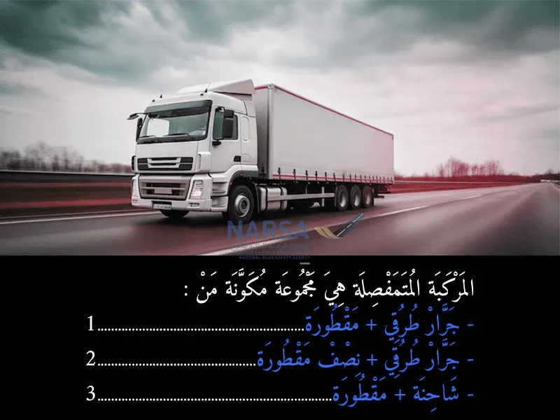
الجواب الصحيح: 2
المركبة المتمفصلة هي واحد النوع ديال المركبات اللي كتكون من جزئين:
الجزء الأول: الجرار (شاحنة ولا جرار طرقي).
الجزء الثاني: نصف مقطورة، يعني مقطورة اللي ما عندهاش العجلات ديال المقدمة، وكتسند قدام على الجرار.
هاد المركبة كتكون مفصولة بجهاز مفصل (articulation)، وداك المفصل هو اللي كيعطيها هاد الاسم: متمفصلة
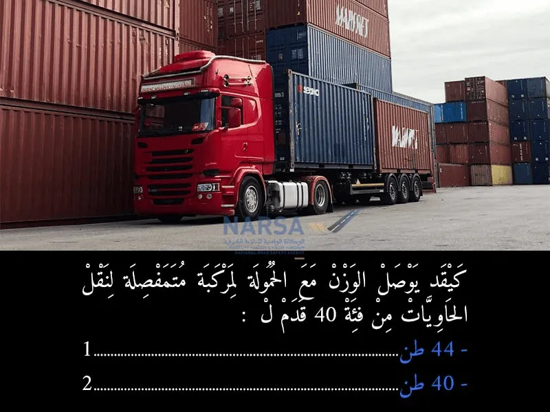
الجواب الصحيح: 1
الجواب الصحيح هو:1. 40 طن بالنسبة للمركبة المتفصلة (الكاميو الكبير) اللي كتهز الحاويات ديال 40 قدم، الوزن الإجمالي الأقصى المسموح به (الكاميو مع الحمولة) كيوصل لـ 44 طن.
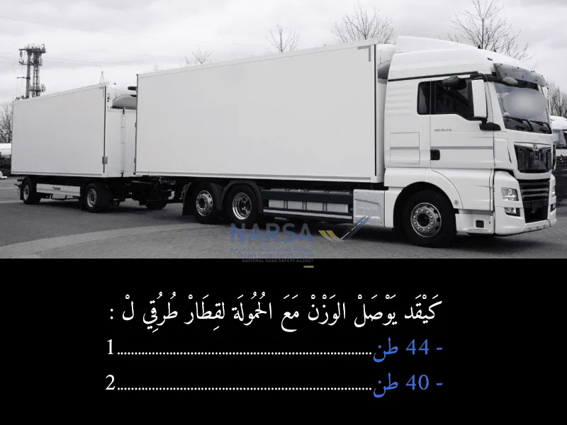
الجواب الصحيح: 2
الجواب الصحيح هو:2. 40 طن بالنسبة للمركبة المتفصلة (الكاميو الكبير) اللي كتهز الحاويات ديال 40 قدم، الوزن الإجمالي الأقصى المسموح به (الكاميو مع الحمولة) كيوصل لـ 40 طن. هادي كاينة فالقوانين ديال الأوزان المسموح بها للمركبات الثقيلة فالمغرب.
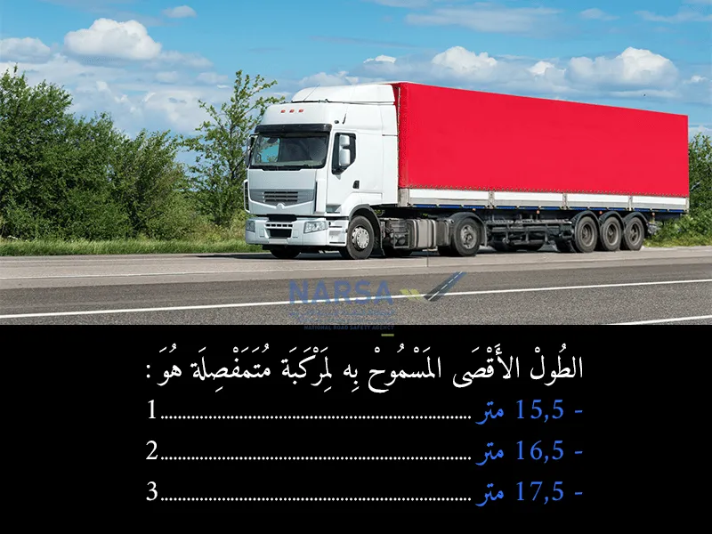
الجواب الصحيح: 2
الجواب الصحيح هو:2. 16,5 متربالنسبة للطول الأقصى المسموح به للمركبة المتفصلة (الكاميو الكبير اللي كيتكون من جرار ونصف مقطورة) فالمغرب، هو 16.5 متر.
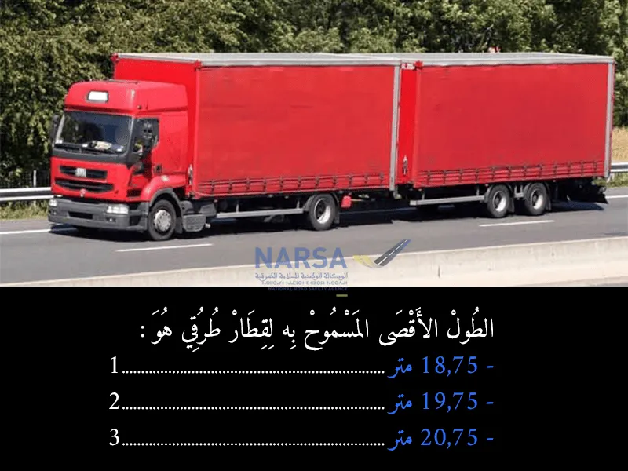
الجواب الصحيح: 1
الجواب الصحيح هو:1. 18,75 متربالنسبة للطول الأقصى المسموح به "للقطار الطرقي" (اللي كيتكون من كاميو عادي كيجّر مقطورة)، هو 18.75 متر. هاد القياس كاين فالقوانين ديال الطرقان فالمغرب.
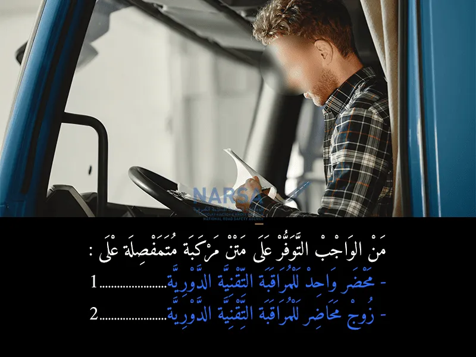
الجواب الصحيح: 2
المركبة المتمفصلة هي مركبة مكوّنة من جزأين:
الرأس القاطر (الجرار / tracteur)
ونصف المقطورة (remorque semi-remorque)
كل واحد من هذين الجزءين يُعتبر مركبة مستقلة من حيث المراقبة التقنية.
🔧 لذلك من الواجب التوفر على:
محضر للمراقبة التقنية للرأس القاطر
ومحضر للمراقبة التقنية لنصف المقطورة
📘 المرجع القانوني المختصر:
حسب مدونة السير على الطرق المغربية والقانون رقم 52.05، المركبات يجب أن تخضع للمراقبة التقنية الدورية، وكل مركبة تُعتبر وحدة تقنية مستقلة.
⛔ عدم توفر أحد الجزأين على محضر المراقبة يُعد مخالفة.
🧠 خلاصة:
> بما أن المركبة المتمفصلة مكوّنة من جزأين منفصلين تقنياً، فـ كل جزء خصو محضر خاص به، لهذا خاصك زوج ديال المحاضر
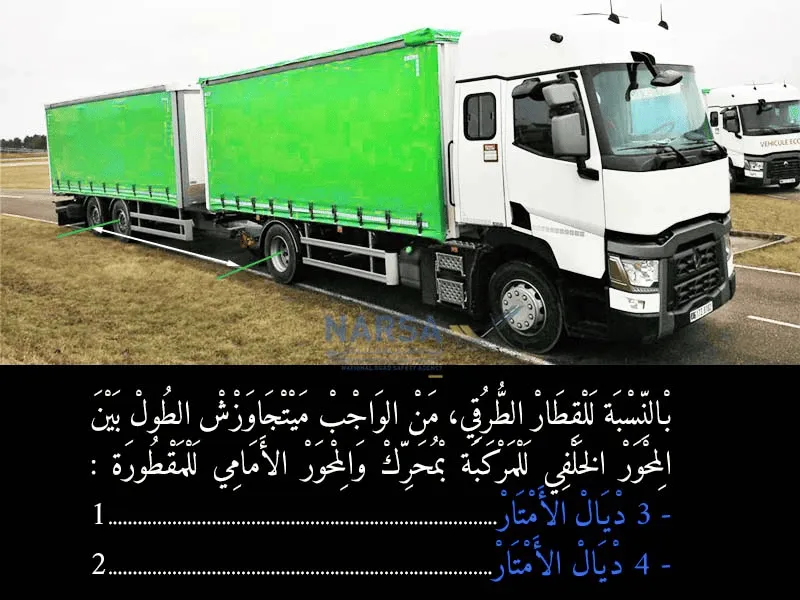
الجواب الصحيح: 1
في القطار الطرقي (مركبة مع مقطورة)، المسافة بين المحور الخلفي للمركبة اللي فيها المحرك والمحور الأمامي للمقطورة خاصها ما تتجاوزش 3 أمتار. هاد القاعدة كاتساعد على ثبات القطار وتحكم أفضل فالقيادة، وكتمنع مشاكل في التوازن أو الخطورة فالحركة.
المادة 8
يجب بالنسبة للقطارات الطرقية ألا تقل المسافة بين المحور الخلفي للمركبة بمحرك والمحور الأمامي للمقطورة عن 3 أمتار.
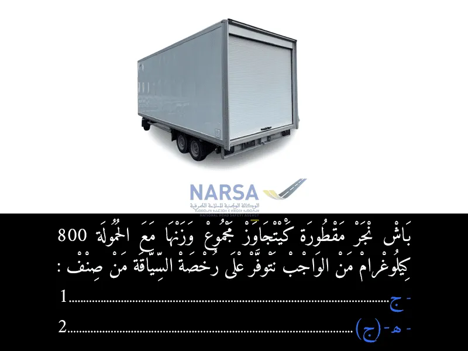
الجواب الصحيح: 2
إذا كنت تريد جر مقطورة يفوق مجموع وزنها مع الحمولة 750 كيلوغرام، فإنك بحاجة إلى رخصة السياقة من صنف EC (ه ج).
صنف C (ج) لوحده يُخوّلك قيادة الشاحنة فقط، دون مقطورة ثقيلة.
📘 المرجع القانوني المختصر:
حسب المرسوم رقم 2.10.311 الصادر لتطبيق أحكام مدونة السير، خاصة الملحق 1 – المادة 4، الذي يحدد أنواع رخص السياقة:
صنف EC مطلوب لقيادة مركبة من الصنف C مع مقطورة أو نصف مقطورة يتعدى وزنها المأذون به مع الحمولة 750 كلغ
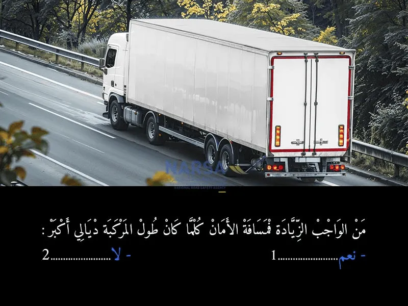
الجواب الصحيح: 1
الجواب الصحيح هو:1. نعمضروري تزيد فمسافة الأمان (المسافة اللي كتخلي بينك وبين الطوموبيل اللي قدامك) كلما كان طول المركبة ديالك كبر. حيت الكاميوات الكبار والتقلاب كيحتاجو مسافة أكبر باش يوقفو، وكتكون المناورات ديالهم صعيبة، ولهذا خاص ديما تخلي مسافة أمان كافية باش تقدر توقف فالحالات الطارئة وتتجنب أي خطر.
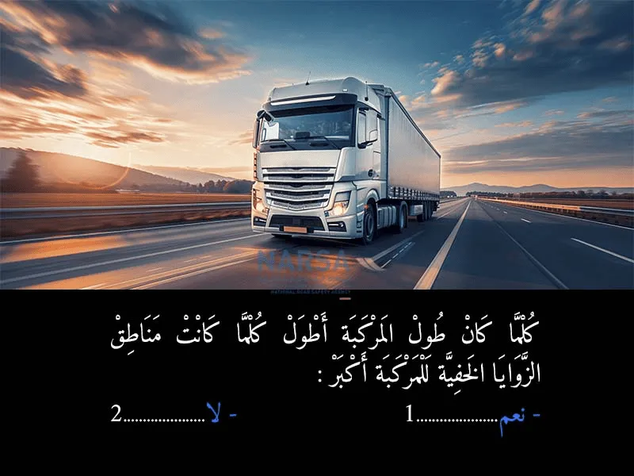
الجواب الصحيح: 1
نعم، كلما كان طول المركبة أطول، كلما كانت مناطق الزوايا الخفية (النقط العمياء) للمركبة أكبر.
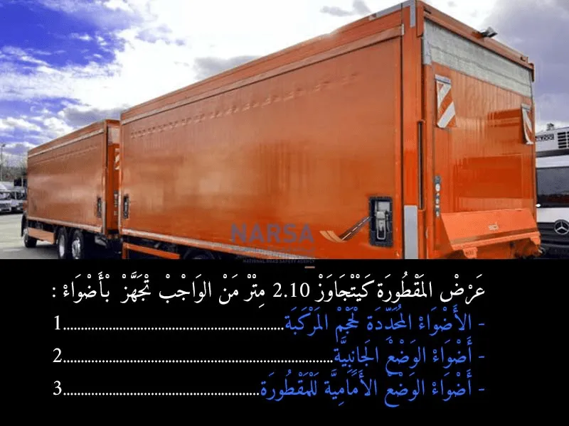
الجواب الصحيح: 1 و 3
بالاعتماد على "مدونة السير على الطرق" بالمغرب، وتحديداً المادتين 55 و 56 من القانون 52-05 المتعلق بمدونة السير، إليك الإجابة على السؤال المتعلق بتجهيز المقطورة بالأضواء عندما يتجاوز عرضها 2.10 متر:إذا كان عرض المقطورة يتجاوز 2.10 متر، فمن الواجب تجهيزها بالأضواء التالية:
أضواء التحديد (Feux d'encombrement / Marker lights): هذه الأضواء تكون بيضاء في المقدمة وحمراء في الخلف، وتدل على أقصى عرض للعربة. (المادة 56 من مدونة السير).
أضواء الوضع الجانبية (Feux de position latéraux / Side position lights): لتعزيز الرؤية الجانبية للمقطورة، خاصةً مع اتساع عرضها. (المادة 56 تشير إلى "أضواء جانبية" للطول، ولكنها ضرورية أيضًا للمركبات ذات الأبعاد الكبيرة بشكل عام).
أضواء الوضع الأمامية للمقطورة (Feux de position avant du remorque / Front position lights for the trailer): هذه الأضواء إلزامية لجميع المقطورات لضمان رؤيتها من الأمام. (المادة 55 من مدونة السير).
لذا، الإجابات على الفراغات هي:
أضواء التحديد لحجم المركبة
أضواء الوضع الأمامية للمقطورة
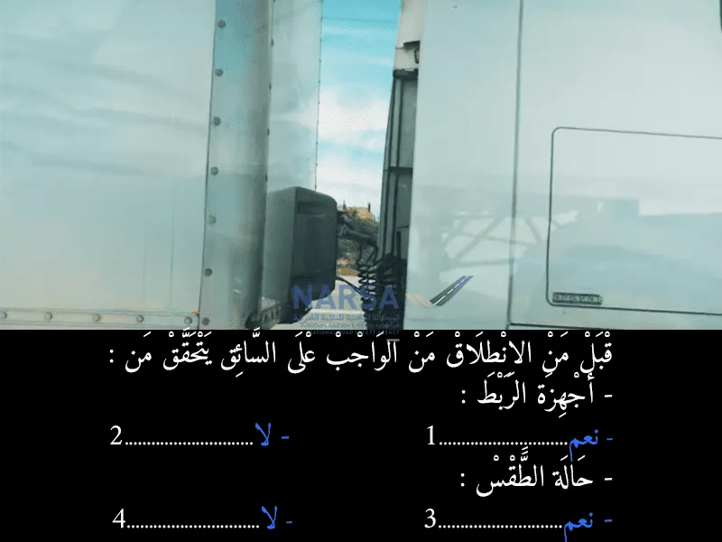
الجواب الصحيح: 1 و 3
خاص السائق يتأكد من:
أجهزة الربط: هادي ضرورية باش تأكد أن الحوايج اللي كتهزها أو اللي كيتعلقو بالطوموبيل (بحال الكروسور، المقطورة، إلخ) راهم مزيانين ومربوطين بإحكام باش ما يتفلتو أو يسببوا شي مشكل. إذن الجواب هو: نعم.
حالة الطقس: هادي مهمة بزاف، حيت حالة الطقس (الشتا، الضباب، السخونية بزاف، البرد، الريح...) كتأثر على الرؤية و على حالة الطريق. السائق خاصو يكون على علم بالطقس باش ياخد الاحتياطات اللازمة (ينقص من السرعة، يشعل الضو ديال الضباب، إلخ). إذن الجواب هو: نعم.
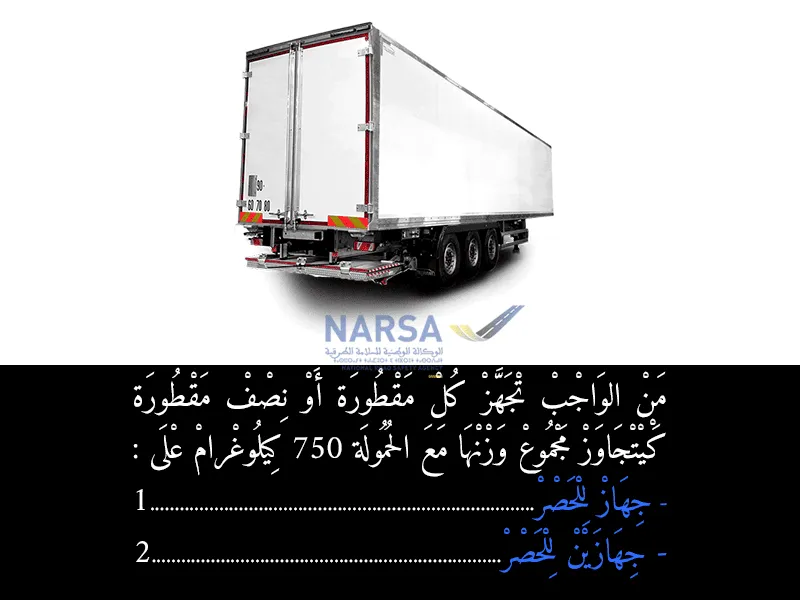
الجواب الصحيح: 2
السؤال كايتكلم على المقطورات أو نصف المقطورات اللي الوزن ديالها الإجمالي مع الحمولة كايتجاوز 750 كيلوغرام. حسب مدونة السير بالمغرب، هاد النوع ديال المقطورات خاصها تكون مجهزة بـ:
جهازين للحصر: يعني يكون عندها نظام فرملة مستقل خاص بيها، ماشي غير تعتمد على الفرامل ديال العربة اللي كتجرها.
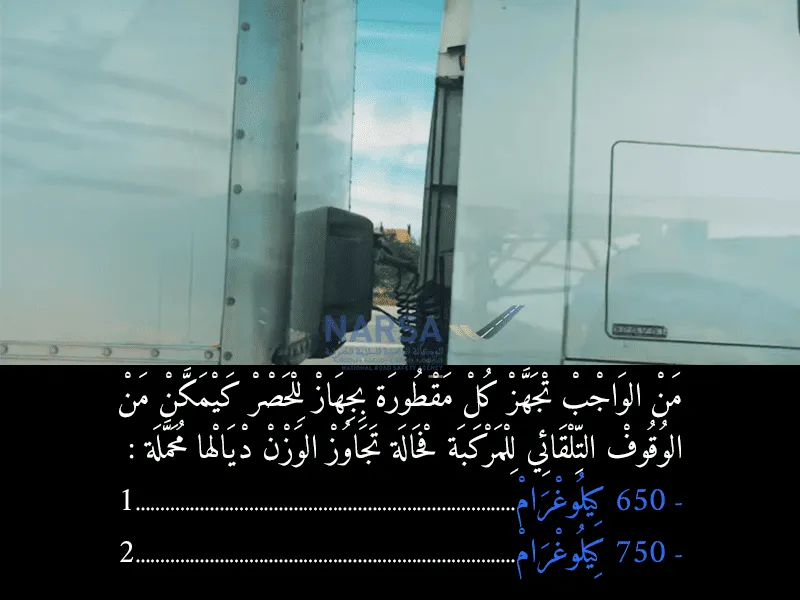
الجواب الصحيح: 2
السؤال كايسول على الوزن اللي خاص المقطورة تجاوزو باش تولي ضرورية تجهيزها بجهاز حصر ذاتي (فران أوتوماتيكي) اللي كايقدر يوقف العربة بوحدو فحال شي مشكل.حسب مدونة السير بالمغرب (قانون السير)، المقطورات اللي الوزن ديالها كيتجاوز 750 كيلوغرام، هي اللي كيتفرض عليها تكون مجهزة بنظام فرملة مستقل (جهاز حصر) كيمكن من الوقوف التلقائي ديال العربة ف حالة انفصال المقطورة مثلاً.إذن، الجواب الصحيح هو:
750 كيلوغرام (المكان اللي غادي تكتب فيه الرقم 2)
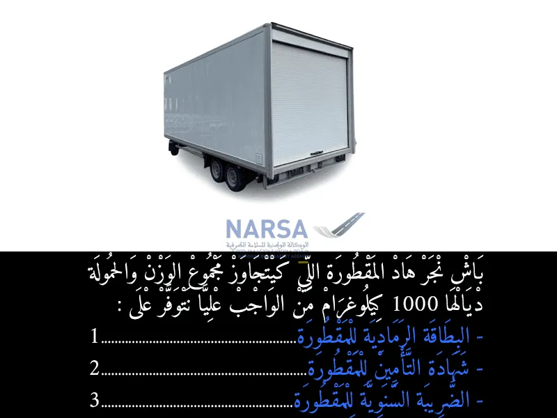
الجواب الصحيح: 1 و 2
السؤال كايسول على الوثائق الضرورية باش تجر مقطورة الوزن الإجمالي ديالها مع الحمولة كايتجاوز 1000 كيلوغرام، حسب مدونة السير بالمغرب.هاد المقطورات، اللي كيتعداو 1000 كيلوغرام، كايتعتبرو بحال شي عربة مستقلة، ولهذا خاص يكونو عندهم الوثائق الخاصة بيهم.الوثائق اللي خاصك توفر عليها هي:
البطاقة الرمادية للمقطورة: بحال البطاقة الرمادية ديال الطوموبيل، كاتبين المعلومات الخاصة بالمقطورة (النوع، الوزن، الخصائص...).
شهادة التأمين للمقطورة: التأمين ضروري لجميع العربات اللي كتسير فالطرق العمومية، والمقطورات اللي كايفوتو 750 كيلوغرام كايطلب عليهم تأمين خاص بيهم.
ا
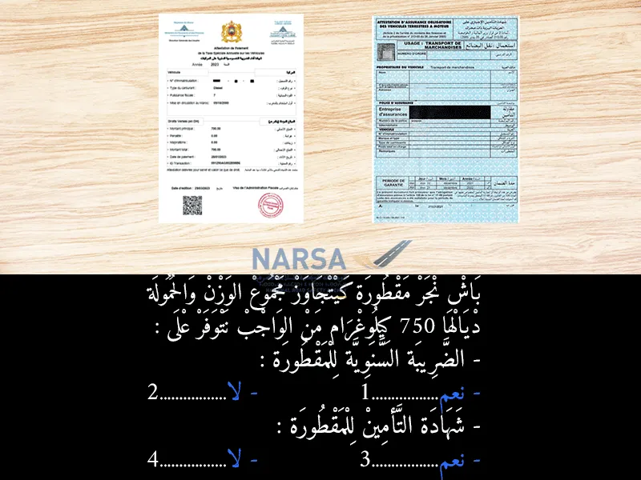
الجواب الصحيح: 2 و 3
السؤال كايسول على الوثائق الضرورية باش تجر مقطورة الوزن الإجمالي ديالها مع الحمولة كايتجاوز 750 كيلوغرام، حسب مدونة السير بالمغرب.هاد المقطورات، اللي كيتعداو 750 كيلوغرام، كايتعتبرو بحال شي عربة مستقلة، ولهذا خاص يكونو عندهم الوثائق الخاصة بيهم.الوثائق اللي خاصك توفر عليها هي:
البطاقة الرمادية للمقطورة: بحال البطاقة الرمادية ديال الطوموبيل، كاتبين المعلومات الخاصة بالمقطورة (النوع، الوزن، الخصائص...).
شهادة التأمين للمقطورة: التأمين ضروري لجميع العربات اللي كتسير فالطرق العمومية، والمقطورات اللي كايفوتو 750 كيلوغرام كايطلب عليهم تأمين خاص بيهم.
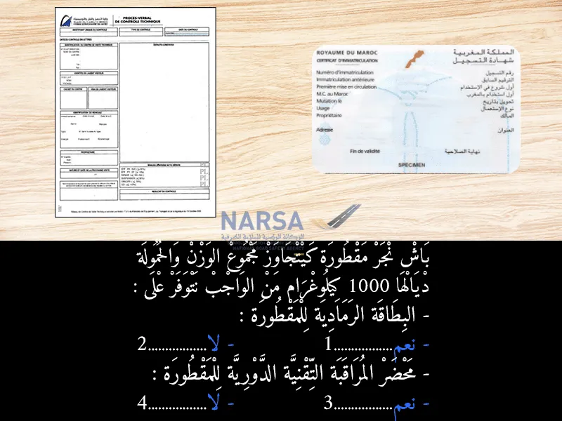
الجواب الصحيح: 1 و 3
1. البطاقة الرمادية للمقطورة:
كل مقطورة يتجاوز وزنها الإجمالي المأذون به محملة 750 كيلوغرامًا يجب أن تُسجل وتحصل على شهادة تسجيل (البطاقة الرمادية). هذا الإجراء يهدف إلى ضمان أن المقطورة مسجلة رسميًا وتفي بالمعايير التقنية المطلوبة.
2. محضر المراقبة التقنية الدورية للمقطورة:
المقطورات التي يتجاوز وزنها الإجمالي المأذون به محملة 750 كيلوغرامًا تخضع أيضًا لـ مراقبة تقنية دورية. يجب أن تجتاز هذه المقطورات فحصًا تقنيًا منتظمًا للتأكد من سلامتها وصلاحيتها للسير على الطرق.